（中心がくぼんだ414SL用パッド）
（中心がくぼんだ414SL用パッド）ミッシングリンク
今回（2009/8/17）のゼンハイザーのインデックスページの改訂にあわせ、「HD-414(NEWTIPE)」を追加しました。
実は最初にゼンハイザーのデータを公開するとき、未消化の問題がありました。当時、サイトでは「HD-414→HD-414X→HD-414SL」といった順でデータを並べていました。しかし、実は手持ちの資料の中に1984年頃の「オーディオアクセサリー」誌のヘッドフォンテストの記事があるのですが、そこに「HD-414X」ではなく、ただ「HD-414」と記載された機種が登場しています。だが当時（1985年頃）のカタログには「HD-414X」が記載されていましたので、「HD-414X」の本体には「X」の文字が記載されていない為、「オーディオアクセサリー」誌の「HD-414」＝「HD-414X」と認識しました。
ただし、いくつか疑問点がありました。1985年頃のカタログの「HD-414SL」の記載の改良点で、軽量化(414X=135g→414SL=90g)についてふれていないこと、そして1995年にゼンハイザーの50周年記念で復刻された「HD-414classic」のベースモデルが存在しないことでした。
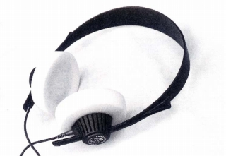
「HD-414classic」は重量80gと軽量で、インピーダンス52Ωのドライバーを持ちます。ドライバーは414系の実質的な最終モデル「HD-414SL」がインピーダンス50Ωのモデルで、このドライバーを使ったと考えればつじつまがあいますが、「HD-414」本来のデザインで重量100gを切ったモデルは手元にデータがありませんでした。
そうした状態で、サイト開設後に国会図書館で古いオーディオ誌を閲覧していて、1981年頃に「HD-414」の改良があったとの記事を見つけました。この記事に基づき、今回追加したのが「HD-414(NEWTIPE)」です。
このモデルで「HD-414」のバリエーションについて整理がつきました。このモデルは重量74gまたは80gとされ、「HD-414classic」のベースモデルにぴったりですし、このモデルと比較すれば「HD-414SL」はヘッドバンドの変更やカプセルの大型化で重量が増加（→90g)していますので、軽量化をアピールするわけがありません。また「HD-414(NEWTIPE)」はローインピーダンスモデルですから、ハイインピーダンスモデルを必要とするユーザーの為に「HD-414X」を残した説明もつきます。
「HD-414」の名を持つモデルをまとめると以下のようになります。（2001年の復刻モデルは除く）
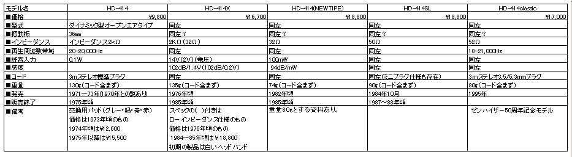
�@HD-414
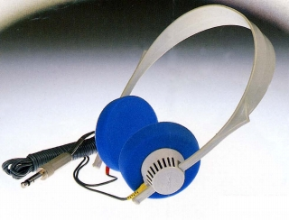
白いヘッドバンドとブルーのイヤパッドが特徴。ただしこのカラーリングは初期型の414Xにも存在するようで、白いヘッドバンド＝オリジナルモデルではありません。414Xとの外観上の差異は、ヘッドバンドに長さ調整用のミゾが刻まれていないこと。こうした観点でネット上の画像を探すと、「まみそぶろぐ」さんのHD-414はまさにオリジナルモデルだと思います。
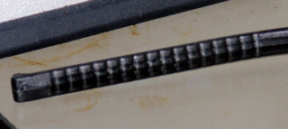
�AHD-414X
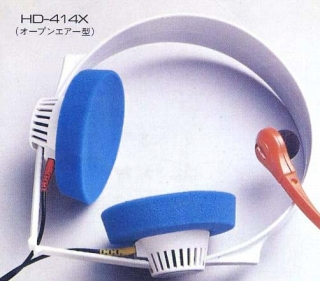 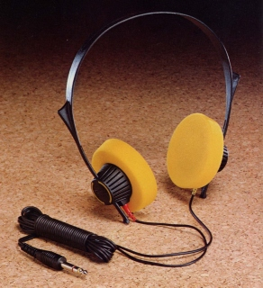
最初の改良型。上述のヘッドバンドのミゾの他、ローインピーダンス仕様機の追加等。音調も「2,000Hz付近のピーク値を若干下げた」との広告があり、無印のHD-414とは違うようです。このモデル本体には「Ｘ」の刻印はありません。
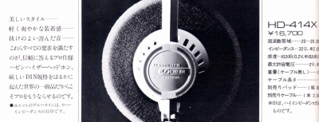
�BHD-414(NEWTIPE)
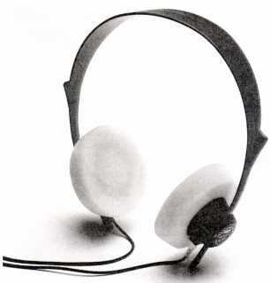
大幅な軽量化(135g→74g)を果たしたモデル。軽量化の内容は不明（*）ですが、これだけ重量が違えば音も変化しているはず。また磁石やボイスコイル等金属に関連した部品が関係している可能性も高いと思います。このモデルからカプセル背面のメーカー名やモデル名が着色され、見やすくなりました。現在、ゼンハイザージャパンのサイトで「HD414」として表示されているモデルも、このバージョンと思われます。このモデルもオークション等では「オリジナル」として出品されることがあるようです。ただし時代的に「ドイツ」製であるのは間違いありません。
*この記事掲載後に見つけた広告によれば、ヘッドバンド等ではなく。ユニット素材に新技術を投入とあります。
�CHD-414SL
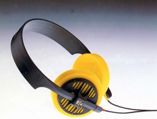
カプセルの大型化・背面スリット幅の拡大とイヤパッドの立体化で低域再生力の強化を狙った事実上の最終モデル。カプセルの形状が違う為、ノーマルな414用のイヤパッドでは本来の性能が発揮できません。414SL用のイヤパッドは生産中止であり、メンテナンスに一番問題があるモデル。moonrabbitさんが2007/6/14〜6/17のブログでこのモデルのレストアの記事を載せていらっしゃいます。
（中心がくぼんだ414SL用パッド）
�DHD-414classic
1995年のゼンハイザー50周年記念の限定モデル。おそらくケーブルはOFC製と思われます。古いゼンハイザーのケーブルは硬くタッチノイズが多めなので、他のモデルもケーブルは純正の現行ケーブルに交換をしたほうがいいと思います。なお2001年にも500台復刻されたようだが、そちらの詳細は不明。
*HD-414(NEWTIPE)とHD-414classicの識別について
HD-414(NEWTIPE)とHD-414classicは、外観はほぼ同じであり、元箱がなければ識別は困難です。部品の互換性が確保されているのが古いゼンハイザーの特長ですので、100％の決め手とはなりませんが、2点ほど識別ポイントがあります。
（1）HD-414classicのヘッドバンド
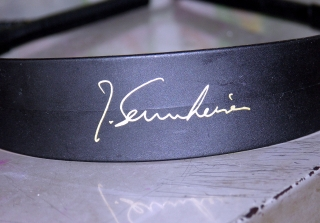
HD-414classicはそもそも記念モデルなので、ヘッドバンドにゼンハイザー博士のものらしきサインが入っています。ただし2001年の復刻モデルは現物を見たことがないので断定できません。
（2）旧規格のケーブル
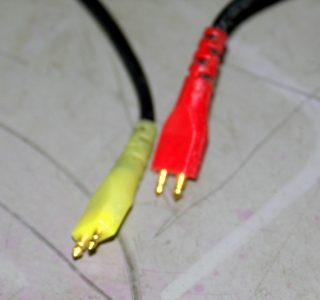
1970年代後半〜1980年代半ばまでのゼンハイザーの標準ケーブルは左チャンネルが白でなく、黄色でした。このケーブルがついていたらHD-414(NEWTIPE)である可能性が高いです。ただし末期には別のケーブルのものがあったかもしれませんし、故障して交換されていればそれまでです。